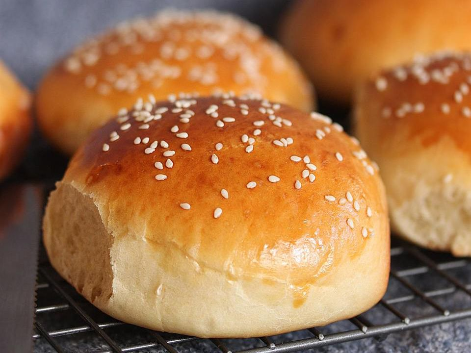

Belle's Hamburger Buns

My mom used to make these hamburger buns all the time. They are so easy to make: light and fluffy as well as beautiful to look at. I get raves whenever I make them. Try using them for sandwich rolls too--delicious!
Ingredients:
1 cup milk
1 cup water
2 tablespoons butter
1 tablespoon white sugar
1 ½ teaspoons salt
5 ½ cups all-purpose flour
1 (.25 ounce) envelope active dry yeast
1 egg yolk
1 tablespoon water
Directions
1. Combine the milk, 1 cup of water, butter, sugar and salt in a saucepan. Bring to a boil then remove from the heat and let stand until lukewarm. If the mixture is too hot, it will kill the yeast.
2. In a large bowl, stir together the flour and yeast. Pour in wet ingredients and stir until the dough starts to pull together. If you have a stand mixer, use the dough hook to mix for about 8 minutes. If not, knead the dough on a floured surface for about 10 minutes. Place the dough in a greased bowl, turning to coat. Cover and let stand until doubled in size, about 1 hour.
3. Punch down the dough and divide into 12 portions They should be a little larger than a golf ball. Make tight balls out of the dough by pulling the dough tightly around and pinching it at the bottom. Place on a baking sheet lined with parchment paper or aluminum foil. After the rolls sit for a minute and relax, flatten each ball with the palm of your hand until it is 3 to 4 inches wide. You may want to oil your hand first. Set rolls aside until they double in size, about 20 minutes.
4. Preheat the oven to 400 degrees F (200 degrees C). Mix together the egg yolk and 1 tablespoon of water in a cup or small bowl. Brush onto the tops of the rolls. Position 2 oven racks so they are not too close to the top or bottom of the oven.
5. Bake for 10 minutes in the preheated oven. Remove the rolls from the oven and return them to different shelves so each one spends a little time on the top. Continue to bake for another 5 to 10 minutes, or until nicely browned on the top and bottom.